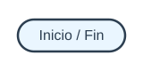
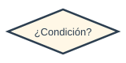
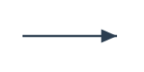

🧮 Definición de Algoritmo
Qué es un algoritmo, qué es un diagrama de flujo y cuáles son sus símbolos
¿Qué es un algoritmo?
Un algoritmo es una secuencia ordenada y finita de pasos que permite resolver un problema o realizar una tarea. Cada paso debe estar definido con claridad, ejecutarse en un orden concreto y conducir, después de un número limitado de pasos, a un resultado.
En programación, antes de escribir el código solemos describir el algoritmo en lenguaje natural o en pseudocódigo, y luego lo representamos de forma visual mediante un diagrama de flujo.
¿Qué es un diagrama de flujo?
Un diagrama de flujo es un dibujo que representa un proceso compuesto por tareas y decisiones. Su finalidad es expresar de manera simple y visual lo que ocurre en un proceso o en un programa, de manera que sea fácil de comprender.
Los dibuja un cliente al comienzo de un proyecto para que el programador entienda mejor lo que debe programar, y también los programadores para documentar qué hace un programa una vez terminado. No se limitan a representar programas: también nos pueden informar de las tareas que debemos realizar en una situación determinada.
Símbolos de los diagramas de flujo
Estos son los principales símbolos utilizados para dibujar diagramas de flujo.

Comienzo y final
Rectángulos redondeados que marcan dónde empieza y termina el diagrama.
Tarea
Rectángulo que representa una acción: sumar, calcular el IVA, hacer un promedio.
Entrada y salida
Paralelogramo usado para leer datos del usuario o mostrar resultados.

Decisión
Rombo que bifurca el flujo en dos caminos según se cumpla o no la condición.

Flecha de flujo
Indica el camino que sigue el ordenador desde el comienzo hasta el final.
Conector
Círculo con un número que une flechas lejanas. Siempre van en parejas con el mismo número.